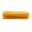
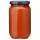
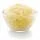

Carne de Panela

Ingredientes (6porções)
- 500 g de massa de lasanha
-
.webp) 2
caixas de
creme de leite
2
caixas de
creme de leite  3
colheres de
farinha de trigo
3
colheres de
farinha de trigo 500 g de
mussarela
500 g de
mussarela 2 copos de leite
2 copos de leite 3 colheres de óleo
3 colheres de óleo
- 3 dentes de alho amassados
 500 g de carne moída
500 g de carne moída
 3 colheres de manteiga
3 colheres de manteiga 500 g de presunto
500 g de presunto sal a gosto
sal a gosto
- 1 cebola ralada
- 1 caixa de molho de tomate
- 1 pacote de queijo ralado
Modo de preparo

Modo de
preparo:45min.
-
Lasanha
Cozinhe a massa segundo as orientações do fabricante, despeje em um refratário com água gelada para não grudar e reserve. -
Molho à bolonhesa
Refogue o alho, a cebola, a carne moída, o molho de tomate, deixe cozinhar por 3 minutos e reserve. -
Molho branco
Derreta a margarina, coloque as 3 colheres de farinha de trigo e mexa. - Despeje o leite aos poucos e continue mexendo.
- Por último, coloque o creme de leite, mexa por 1 minuto e desligue o fogo.
-
Montagem
Despeje uma parte do molho à bolonhesa em um refratário, a metade da massa, a metade do presunto, a metade da mussarela, todo o molho branco e o restante da massa. - Repita as camadas até a borda do recipiente.
- Finalize com o queijo ralado e leve ao forno alto (220° C), preaquecido, por cerca de 20 minutos.